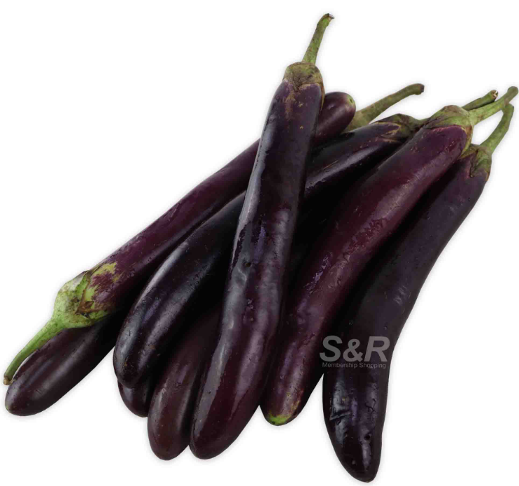
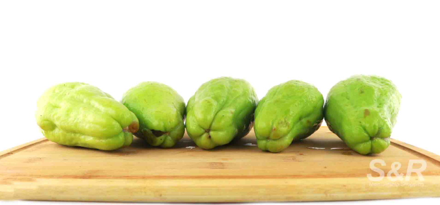

| Fuji Apple |
1pc (approx. 200g) |
A sweet and crunchy apple with bright red skin. It has a juicy texture and a balanced flavor of sweetness and tartness. Great for eating fresh, making desserts, or adding to salads. |
- High in iber
- Vitamin C
- Antioxidants
|

|
| Seedless Watermelon |
1pc (appox.3kg) |
A juicy and refreshing fruit with a naturally sweet taste. It has no seeds, making it easy to eat and enjoy. Perfect for hot days, smoothies, or fruit salads. |
- Rich in water
- Vitamin A
- Vitamin C
|

|
| Green Kiwi |
1pc (approx. 90g) |
A small fruit with a fuzzy brown skin and bright green flesh. It has a tangy-sweet taste and is rich in vitamin C. Best enjoyed fresh, in smoothies, or as a topping for desserts. |
- Vitamin C
- Fiber
- Antioxidants
|

|
| Korean Pears |
1pc (approx 300g) |
A large, round pear with a crisp and juicy texture. It has a mild sweetness and a refreshing taste. Ideal for snacking, juicing, or adding to fruit salads. |
- Good source of fiber
- Vitamin K
- Potassium
|

|
| Globe Grapes |
500g |
A variety of grapes known for their large, round size and sweet flavor. They have a firm texture and a juicy bite. Great for snacking, making juices, or adding to cheese platters. |
- High in Vitamin C
- Antioxidant
- Natural sugars
|

|
| Baguio Lettuce |
250g |
A leafy green vegetable with a crisp texture and mild taste. It is commonly used in salads, sandwiches, and wraps. A great source of fiber and vitamins. |
- Low in calories
- Rich in Vitamin K
- Folate
|

|
| Baguio Beans |
250g |
A type of green bean that is long, crisp, and slightly sweet. It is commonly used in stir-fries, soups, and side dishes. A nutritious vegetable rich in fiber and vitamins. |
- High in fiber
- Vitamin C
- Iron
|

|
| Baguio Eggplant |
250g |
A purple vegetable with a soft and spongy texture. It absorbs flavors well and is often used in stews, grilled dishes, and stir-fries. A good source of fiber and antioxidants. |
- Contains fiber
- Vitamin B6
- Potassium
|

|
| Baguio Cabbage |
1pc a kg |
A round, leafy vegetable with a crunchy texture and mild taste. It is used in soups, stir-fries, and fresh salads. A great source of fiber and vitamins. |
- Rich in Vitamin C
- Fiber
- Folate
|

|
| Baguio Chayote |
40g a pc |
A light green vegetable with a mild, crisp texture. It is often used in soups, stir-fries, or eaten fresh in salads. A nutritious choice, packed with vitamins and minerals. |
- High in fiber
- Vitamin C
- Potassium
|

|